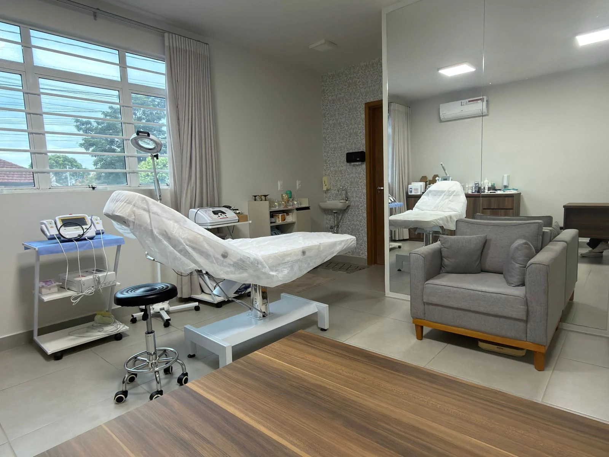
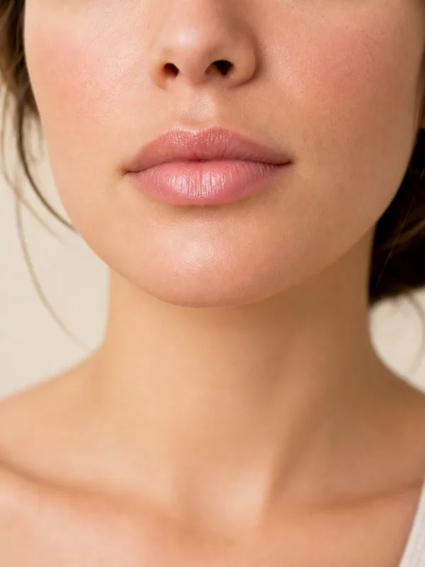
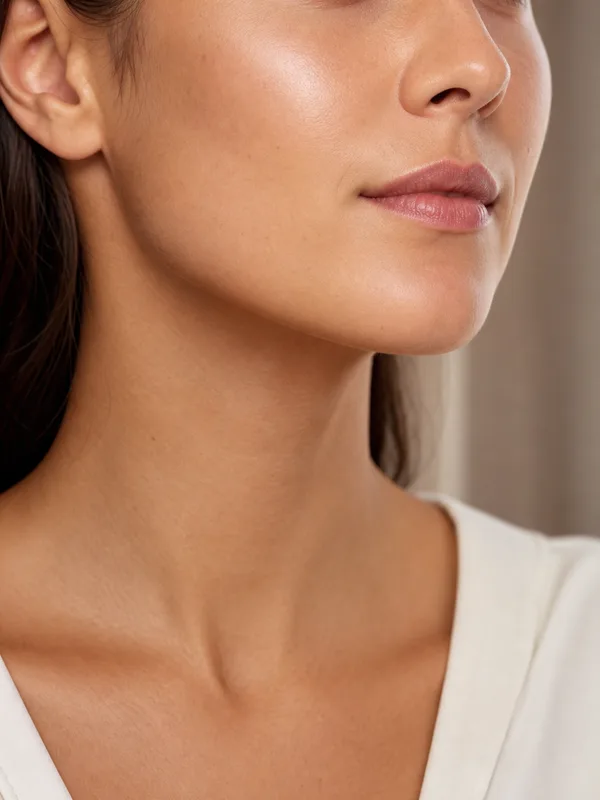
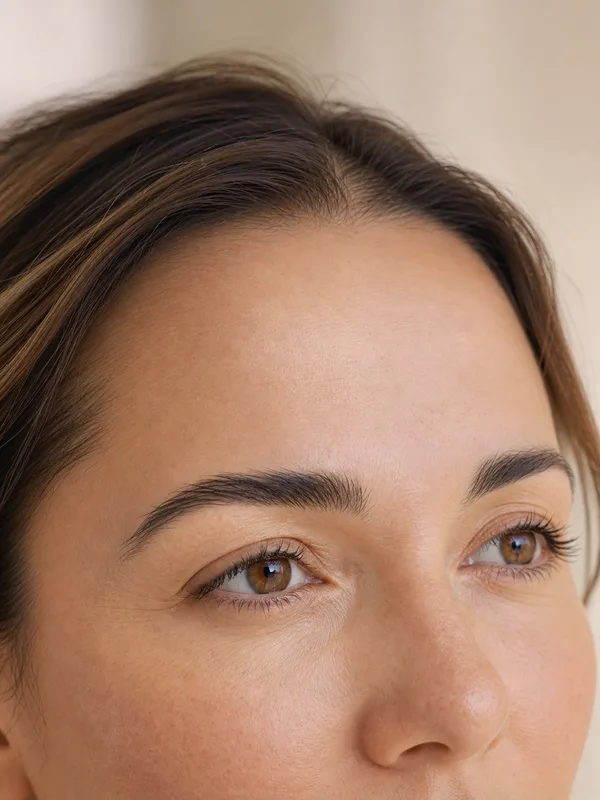
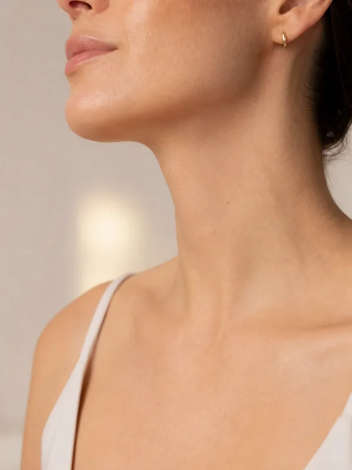

Preenchimento Labial
Volume e contorno naturais para lábios harmoniosos.
Saiba mais →DRA. SILVIA NEVES · LONDRINA
Na Neves Estética, a Dra. Silvia une Enfermagem, Biomedicina, especialização em Estética e HOF para planejar procedimentos com técnica, segurança e respeito à sua anatomia.

QUEM CUIDA DE VOCÊ
Enfermeira e biomédica, Dra. Silvia Neves soma 17 anos de carreira na área da saúde e atua na estética desde 2020. Especialista em Estética pela Nepuga e em HOF, com registros COREN 277872 e CRBM 4417, já realizou mais de 700 procedimentos e conduz cada atendimento com técnica, segurança e um olhar personalizado. Seu cuidado une experiência clínica, atualização constante e planejamento individualizado para respeitar a anatomia, os desejos e a naturalidade de cada paciente.
TRATAMENTOS
Volume e contorno naturais para lábios harmoniosos.
Saiba mais →Equilíbrio entre proporções e expressão do rosto.
Saiba mais →Suavização de linhas de expressão com naturalidade.
Saiba mais →Suavização da profundidade abaixo dos olhos para um olhar descansado.
Saiba mais →Realce da cor e do contorno dos lábios com acabamento delicado.
Saiba mais →Definição do contorno facial sem cirurgia.
Saiba mais →Efeito lifting sem cirurgia para melhorar firmeza e contorno facial.
Saiba mais →Estímulo natural de firmeza e juventude.
Saiba mais →Acompanhamento personalizado com foco em saúde.
Saiba mais →Renovação da pele para melhorar textura, luminosidade e manchas.
Saiba mais →Estímulo de regeneração da pele com ativos selecionados para cada caso.
Saiba mais →Hidratação profunda para melhorar viço, textura e qualidade da pele.
Saiba mais →POR QUE A NEVES ESTÉTICA
Experiência na saúde, formação técnica e estética avançada com foco em segurança e naturalidade.
Experiência clínica aplicada ao cuidado estético.
Vivência prática em atendimentos personalizados.
Atuação focada em estética avançada e HOF.
Formação técnica para conduzir protocolos com segurança.
Atualização constante em procedimentos faciais e corporais.
Cada procedimento respeita anatomia, expressão e beleza individual, sem exageros.
RESULTADOS

Preenchimento Labial

Harmonização Facial

Botox

Lipo de Papada
Micropigmentação Labial
Preenchimento de Olheiras
Peeling
Microagulhamento
Skinbooster
Fios de Sustentação
QUEM JÁ CONFIOU
A Dra. Silvia entendeu exatamente o que eu queria. O resultado foi tão natural que minhas amigas perceberam que algo estava diferente, mas não conseguiram dizer o quê. Confiança total.
Atendimento impecável do começo ao fim. Senti segurança em cada etapa. Hoje me olho no espelho e me reconheço ainda mais bonita.
Procurei várias clínicas antes de chegar na Dra. Silvia. A diferença está no olhar dela: ela escuta primeiro, depois propõe. Indico de olhos fechados.
Fiz preenchimento de olheiras e fiquei impressionada com a delicadeza do resultado. O olhar ficou mais descansado, sem perder minhas características.
Gostei porque ela explicou tudo antes, inclusive o que não faria sentido para mim. Isso me passou muita confiança.
Meu botox ficou leve, sem aquele aspecto travado. Foi exatamente o que eu queria: suavizar as marcas e continuar parecendo eu.
O atendimento é acolhedor e muito profissional. Saí da avaliação entendendo o que seria melhor para meu rosto, sem pressão.
Fiz microagulhamento com ativos e senti minha pele mais viçosa nas semanas seguintes. O cuidado no pós também fez diferença.
Escolhi a Dra. Silvia pela segurança que ela transmite. O resultado da harmonização ficou discreto, elegante e muito natural.
DÚVIDAS FREQUENTES
A maioria dos procedimentos é minimamente invasiva. Utilizamos anestesia tópica (creme) ou injetável quando necessário, e técnicas que minimizam o desconforto. Você sente muito mais segurança do que dor — e qualquer dúvida durante o atendimento pode ser conversada abertamente.
Depende do procedimento e da resposta individual de cada paciente. Em geral, preenchimentos labiais duram de 8 a 12 meses, harmonização facial de 12 a 18 meses, e botox de 4 a 6 meses. Bioestimuladores podem prolongar resultados por até 2 anos. Na avaliação, explicamos o tempo esperado para o seu caso.
Alguns procedimentos têm efeito imediato (preenchimento labial, harmonização), outros levam de 7 a 30 dias para o resultado final aparecer (botox, bioestimuladores). É comum observar leve inchaço nos primeiros dias — isso faz parte do processo natural de adaptação.
Como em qualquer procedimento estético, existem riscos, mas são minimizados quando o atendimento é feito por profissional qualificada, com produtos certificados pela Anvisa e protocolos de segurança rigorosos. Os efeitos mais comuns são leves: vermelhidão, pequeno inchaço ou hematoma, que desaparecem em poucos dias.
Sim. Recomendamos evitar álcool e anti-inflamatórios nos dias anteriores, e proteção solar reforçada após o procedimento. Cada protocolo tem orientações específicas que entregamos por escrito após a avaliação, para você ter tudo organizado.
A formação em Enfermagem e Biomedicina permite avaliar sua anatomia, sua saúde geral e possíveis contraindicações com profundidade clínica. Com 17 anos de carreira na saúde, especialização em Estética pela Nepuga e formação em HOF, Dra. Silvia conduz cada atendimento com técnica, segurança e planejamento individualizado.
A avaliação é conversada e personalizada. Conhecemos seus desejos, analisamos sua anatomia, explicamos as opções disponíveis e construímos juntas um plano que respeite seu tempo, seu orçamento e seu resultado ideal. Você sai com clareza sobre o que faz sentido para você, sem pressão.
ONDE ESTAMOS
R. Cel. Camisão, 61 · Jardim Europa
Londrina/PR · CEP 86015-690
Seg a Sex: 09h às 18h
Sáb: 08h às 12h